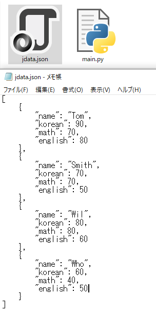

こんにちは。明月です。
この投稿はPythonでJsonを扱う方法に関する説明です。
以前にCSVとXMLを扱う方法に関して説明したことがあります。
link - [Python] IOを利用してCSVファイルを扱う方法
link - [Python] XMLファイルを扱う方法
プログラムで人間が認識するデータ構造で様々がありますが、最近はJSONタイプをよく使います。JSONとはJavascript object notationの略語でJavascriptのデータ表記法です。
つまり、Javascriptの文法構造がJSONタイプです。JavascriptがPythonと同じスクリプトだから表記法も似てます。
例えば、中括弧{キー：値}のタイプはPythonのディクショナリです。[データ、データ]のタイプはリストタイプです。
また、JSONのXMLの階層的表現も可能するので様々な活用度もたくさん高いタイプです。
それならJSONデータを出力しましょう。
# jsonを扱うためにjsonをimportする。
import json
# ディクショナリデータをJSONデータに作る。
data = [{'name':'Tom','korean':90,'math':70,'english':80},
{'name':'Smith','korean':70,'math':70,'english':50},
{'name':'Wil','korean':80,'math':80,'english':60},
{'name':'Who','korean':60,'math':40,'english':50}]
# dataをjson stringタイプに変換する。パラメータのindentはpretty設定だ、
jdata = json.dumps(data, indent=4)
# IOを利用して出力する。
with open("jdata.json", "w") as handle:
# コンソール出力
print(jdata, file=handle)

ディクショナリタイプがJSONタイプなのでPythonのデータがそのままメモ帳に出力されました。
今回はJSONタイプでデータを読み込んでPythonのディクショナリタイプに変換しましょう。
# jsonを扱うためにjsonをimportする。
import json
# IOを利用してファイルをstrタイプに読み込む。
with open("jdata.json", "r") as handle:
# 読み込む。
jdata = handle.read()
# stringタイプであるデータをディレクトリタイプに変換する。
data = json.loads(jdata)
# コンソール出力
print(data)
# 改行出力
print()
# ディクショナリデータを探索して出力する。
print(data[0]["name"])
結果をみればファイルのstrデータを確実に読み込みました。
JSONタイプはPHPのcomposerかnode.jsなどでよく使うデータタイプです。Pythonを利用すれば環境ファイル設定が可能です。
ここまでPythonでJsonを扱う方法に関する説明でした。
ご不明なところや間違いところがあればコメントしてください。
「Devlopment note / Python」の他投稿
- [Python] Web serverを起動する方法(http.server)2020/07/09 00:13:13
- [Python] WebSocketを使う方法2020/07/07 17:29:18
- [Python] PythonとJavaのソケット通信する方法2020/07/03 18:35:50
- [Python] PythonとC#のソケット通信2020/07/01 19:28:22
- [Python] INI(環境設定ファイル)を扱う方法2020/06/30 18:26:01
- [Python] Jsonを扱う方法2020/06/29 19:18:15
- [Python] XMLファイルを扱う方法2020/06/26 19:18:14
- [Python] IOを利用してCSVファイルを扱う方法2020/06/25 18:20:30
最新投稿
- [Python] Web serverを起動する方法(http.server)2020/07/09 00:13:13
- [Python] WebSocketを使う方法2020/07/07 17:29:18
- [Python] PythonとJavaのソケット通信する方法2020/07/03 18:35:50
- [Python] PythonとC#のソケット通信2020/07/01 19:28:22
- [Python] INI(環境設定ファイル)を扱う方法2020/06/30 18:26:01
- [Python] Jsonを扱う方法2020/06/29 19:18:15
- [Python] XMLファイルを扱う方法2020/06/26 19:18:14
- [Python] IOを利用してCSVファイルを扱う方法2020/06/25 18:20:30
- [Python] 21. データベース(mariaDB)を連結する方法2020/06/24 18:51:50
- [Python] 20. stringフォマード(Formatting)と補間法(interpolation)2020/06/23 19:03:21
- [Python] 19. 非同期IOのasync/await(asyncio)を使う方法2020/06/22 18:10:12
- [Python] 18. ネットワーク(Socket)通信する方法2020/06/18 19:53:56
- [Python] 17. スレッド(Thread)とロック(lock)、そしてデッドロック(deadlock)2020/06/18 00:19:45
- [Python] 16. IO(ファイル読み取り、書き込み)を扱う方法2020/06/16 18:37:00
- [Python] 15. クラスを継承する方法2020/06/15 18:20:07